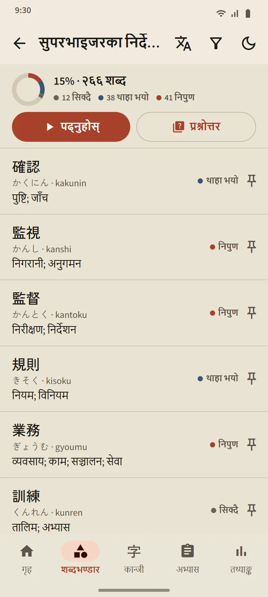

शब्दभण्डार
साँच्चै याद रहने शब्दावली
हरेक कार्ड आधुनिक अन्तरालमा दोहोर्याउने एल्गोरिदम FSRS ले तालिकामा राख्छ। तपाईं आफैँले मूल्याङ्कन गर्नुहोस्, र एपले त्यो शब्द कहिले फर्किन्छ भनेर हिसाब गर्छ: अर्को अन्तराल हरेक बटनमा छापिएको हुन्छ। शब्दहरू नयाँ, सिक्दै र थाहा भयो हुँदै निपुण सम्म पुग्छन्, र त्यो अन्तिम चरणमा प्रश्नोत्तरमार्फत मात्र पुगिन्छ।
- 11 समूहमा 95 विषय। कार्यस्थल समूहमा 21 विषय छन्, सुपरभाइजरका निर्देशन, कार्यस्थल सुरक्षा, तालिका र सम्झौतादेखि कारखाना, निर्माण, कृषि, रेस्टुरेन्ट, होटल र स्याहारसुसारसम्म।
- हरेक डेकको एउटा स्क्रिन। पूरा भएको प्रतिशत, हरेक शब्दको अवस्था, पढ्नुहोस् र प्रश्नोत्तर बटन।
- 38,085 शब्दको पकेट शब्दकोश। कान्जी, काना, रोमाजी वा अर्थबाट खोज्नुहोस्।
